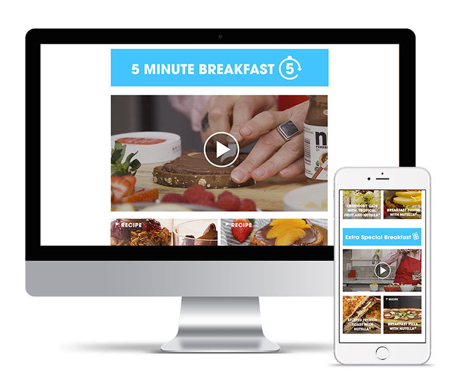
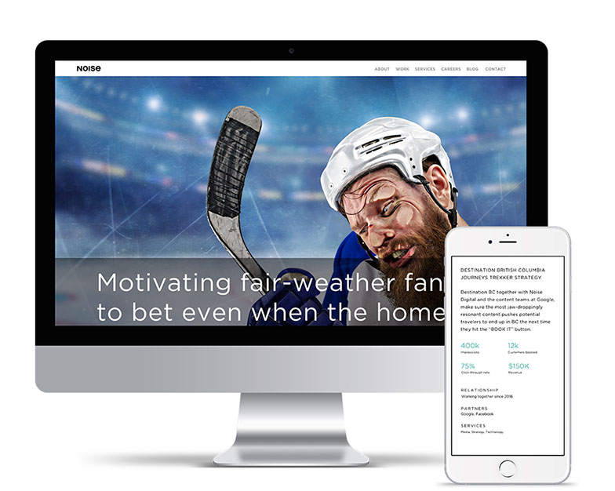

Visual design, UI
In 2017, Noise Digital launched a brand and site refresh. While working with the Art Director, front-end developer, and another designer, I focused on designing, standardizing, and building the case studies page and template on the Noise website.
I initially focused on doing a competitive analysis with other top tier agencies' case studies, and integrating certain elements with the current UX for any existing pages designed for the Noise refresh.
|  |  |
|---|